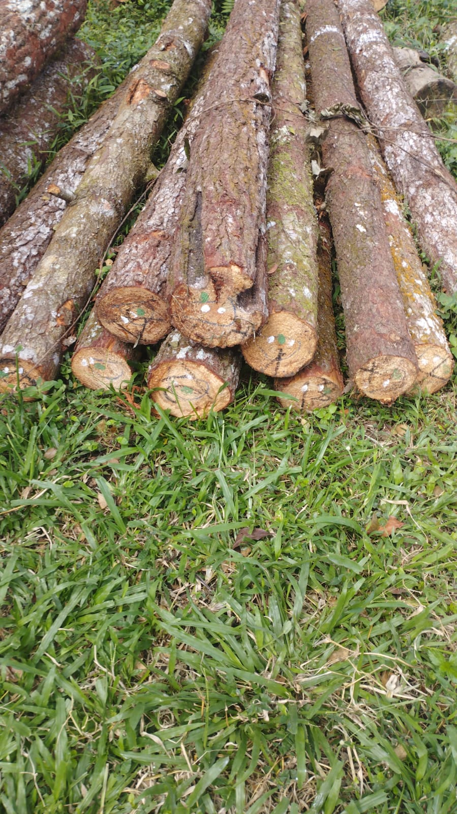
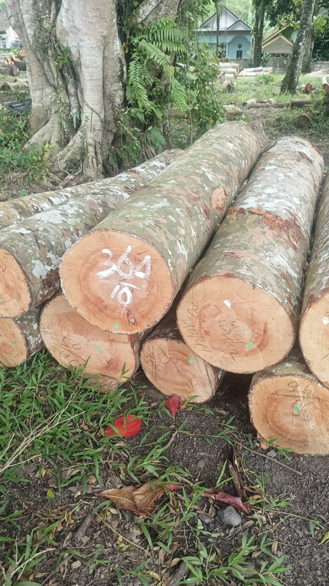
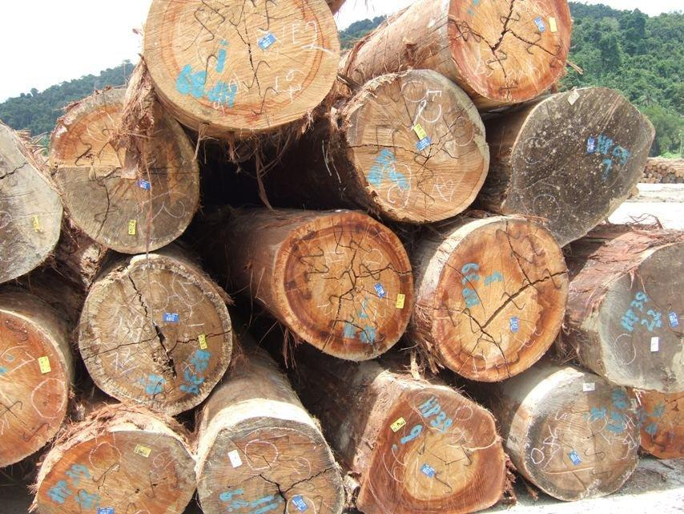

Produk Kami

Sengon
Kayu berwarna putih cerah atau cokelat sangat muda. Merupakan jenis kayu lunak yang pertumbuhannya sangat cepat (pohon cepat panen).
Lihat Detail
Pinus
Kayu berwarna krem muda hingga putih kekuningan dengan serat lurus dan memiliki banyak mata kayu alami yang khas.
Lihat Detail
Damar
Kayu berwarna putih kekuningan hingga cokelat muda pucat dengan tekstur yang sangat halus dan serat yang searah.
Lihat Detail
Jati
Kayu kelas premium berwarna cokelat emas hingga cokelat tua dengan urat kayu yang sangat indah dan kaya akan minyak alami.
Lihat Detail
Meranti
Variasi lain dari keluarga meranti dengan warna kayu yang lebih terang (putih kekuningan atau cokelat muda pucat).
Lihat Detail